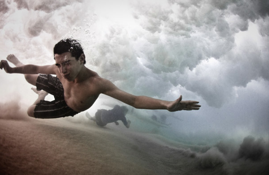

The Underwater Project
I’ve always been intrigued by what happens below the surface, like what’s happening where we can’t see.
Photographer Mark Tipple documents below the surface as swimmers play in the Australian waves. Read more about the project and order prints from The Underwater Project.
Via Fubiz